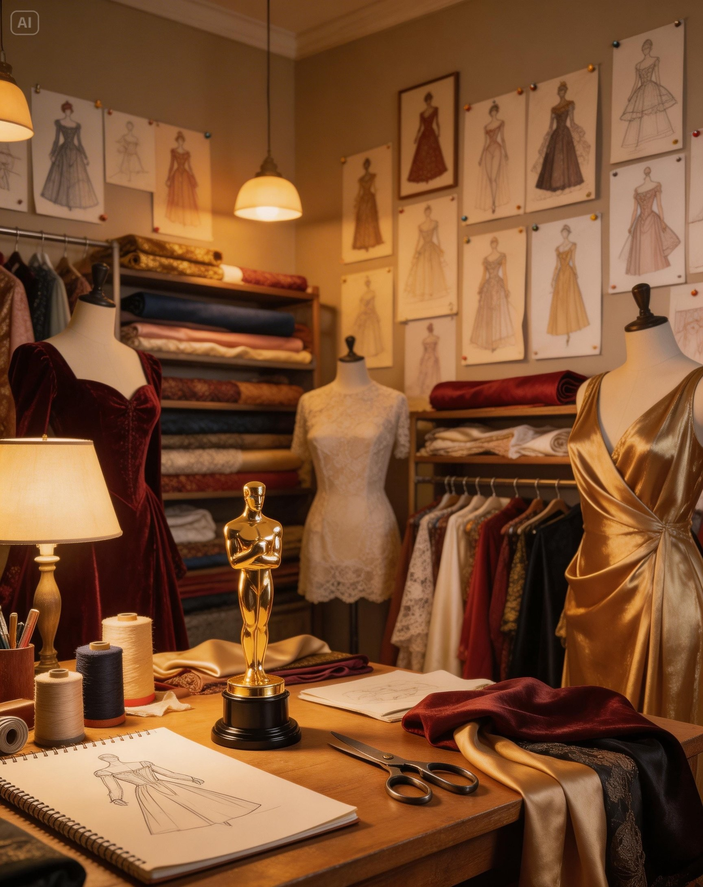
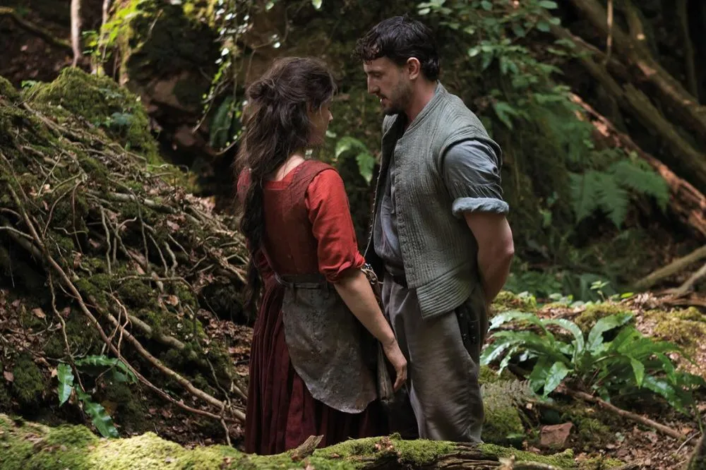
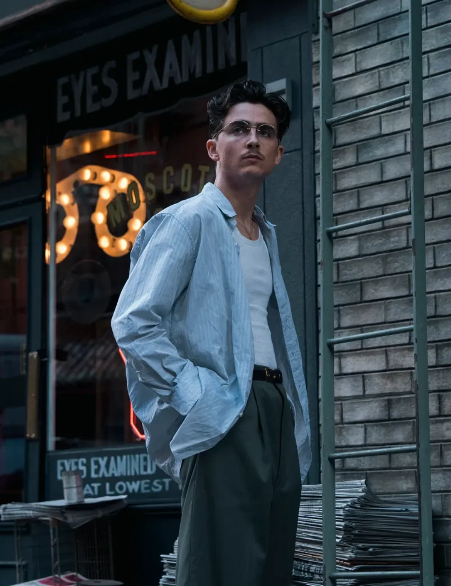
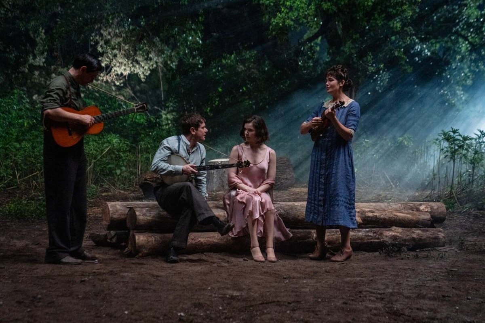
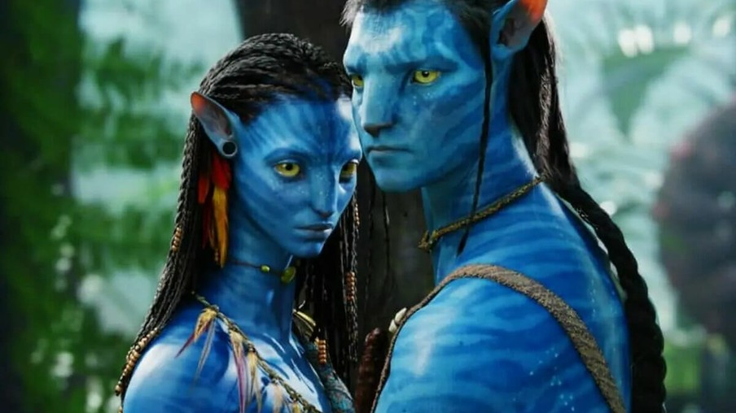

98th Annual Academy Awards
Melhor Figurino
Conheça os candidatos à Premiação do Oscar 2026 por Melhor Figurino.

Vencedor
Frankenstein
O Trabalho: Desenvolvido por Kate Hawley, o figurino foca nos trajes vitorianos detalhados de Victor Frankenstein (Oscar Isaac) e nos restos de roupas esfarrapadas e texturizadas da Criatura (Jacob Elordi).
Destaque: A autenticidade histórica. As peças evitam o brilho artificial do cinema de época tradicional, focando em texturas pesadas e roupas que mostram o desgaste do trabalho manual, integrando os personagens perfeitamente às paisagens naturais filmadas por Zhao.

Hamnet: A Vida Antes de Hamlet
O Trabalho: A figurinista (frequentemente associada ao estilo de Chloé Zhao) optou por materiais orgânicos como lã bruta, linho e tingimentos naturais que evocam a vida na fazenda e o misticismo de Agnes (Jessie Buckley).
Destaques: É um soco no estômago necessário. A crítica elogiou a forma como o documentário conecta estatísticas frias a histórias humanas devastadoras.

Marty Supreme
O Trabalho: Josh Safdie traz uma visão hiper-estilizada do guarda-roupa da metade do século. Espere ternos de corte afiado, jaquetas de couro vibrantes e uma moda que mistura a elegância clássica com o espírito rebelde do protagonista (Timothée Chalamet).
Destaque: O figurino de Chalamet, que utiliza silhuetas marcantes e acessórios de época (como óculos e relógios) para construir a aura de uma "estrela do rock" do pingue-pongue. A paleta de cores é saturada e cheia de energia.

Pecadores (Sinners)
O Trabalho: Ruth E. Carter (vencedora do Oscar) cria trajes que evocam o gótico americano. Há um contraste visual entre os trajes austeros da comunidade religiosa e o visual mais utilitário e moderno dos gêmeos protagonistas (Michael B. Jordan).
Destaque: O simbolismo nas roupas. Carter utiliza detalhes sutis nos tecidos e nas cores para indicar quem está sob a influência do mal que assombra a cidade, transformando o figurino em uma ferramenta narrativa silenciosa.

Avatar: O Fogo e as Cinzas
O Trabalho: A equipe de figurino (em conjunto com o design de produção) criou peças que utilizam ossos, pedras vulcânicas e fibras resistentes ao calor para o Povo das Cinzas.
Destaque: A fusão entre o figurino físico (construído para referência) e o figurino digital. Os adornos são projetados para interagir com a anatomia Na'vi e com a luz intensa da lava, mantendo a funcionalidade cultural e a estética alienígena exótica de Pandora.